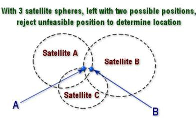

Calculating a Location

To calculate a location using GPS, a process known as trilateration is used. In the context of GPS, the points used are satellites, and the distances are based on the time it takes for signals to travel from the satellites to the receiver. Two satellites can provide a rough estimate of location, but at least three satellites are needed to determine a precise 2D position (latitude and longitude) on the Earth's surface.
Four Satellites
In reality, the earth isn't flat, and the satellites are not all in the same plane, so a fourth satellite is needed to account for the receiver's clock error and provide an accurate three-dimensional position. The receiver calculates the distance to each satellite based on the time it takes for the signals to travel from the satellites to the receiver. By knowing the distance to at least four satellites, the receiver can determine its position in three-dimensional space (latitude, longitude, and altitude) and correct for any clock discrepancies.